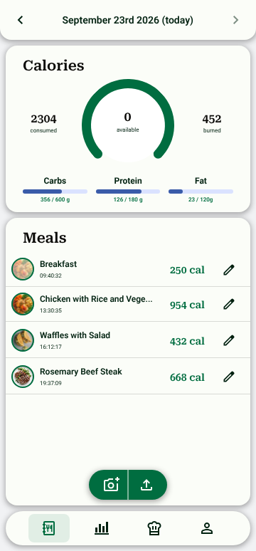

一目でわかる
ホーム画面は、毎日の食事記録をひと目で確認できる画面です。大きなリングには摂取カロリー、消費カロリー、残りのカロリーが表示され、3本の進捗バーが炭水化物、タンパク質、脂質の1日の目標に対する進み具合を示します。その下には、写真・時刻・カロリー付きの食事がコンパクトに並び、タップひとつで編集できます。画面下部の2つのボタンから、カメラでその場で撮影するか、ギャラリーから写真をアップロードして新しい食事を追加できます。技術面では、ブラウザのカメラAPIを通じて撮影し、記録はバックエンドのデータベースに保存され、直近の数日分はService Workerがキャッシュしてオフラインでも閲覧できる設計です。
